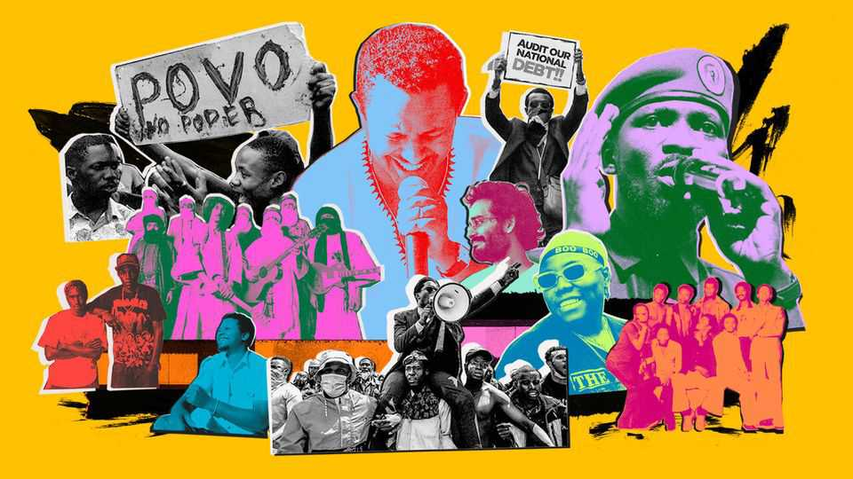

To understand African politics, just listen to the music
Artists have captured a continental spirit of revolt

Oct 29th 2026
“In the town where I grew up I have become a stranger, as though I belong to no land.” So sings Teddy Afro, Ethiopia’s biggest pop star, on “Das Tal”, a hit song released in April. It is a denunciation of the violence and repression convulsing his country. Days after its release more than a hundred people in Addis Ababa, the capital, were reportedly arrested for listening to it in public. Police are said to have warned nightclub owners in the city not to play it. Teddy’s studio was raided and two of his associates were reportedly detained.
Such cartoonish thuggery might seem excessive. But the Ethiopian government and other African regimes have good reason to fear musicians. Opposition parties in Africa tend to be weak or divided. Civil society is typically supine, the media often cowed. But on a continent teeming with disaffected youth, music remains a lively political battleground. In many countries, musicians have emerged as the most authentic—and at times the most dangerous—voices of dissent. “If you want to understand our politics, you should listen to the music,” says an Ethiopian analyst.
This may come as a surprise, since Africa’s best-known musical exports these days are politically anodyne. Afrobeats, for instance, might owe its name to Fela Kuti, a ludic Nigerian radical repeatedly jailed by military juntas. But most of its current stars specialise in “club bangers”, apolitical anthems for the discotheque. South Africa’s music scene once produced anti-apartheid icons like Miriam Makeba and Hugh Masekela. It is now most famous for Amapiano, a hypnotic and hedonistic genre of electronic dance music.
Some link these shifts to the rise of an African middle class and a well-heeled African diaspora. Both prefer revelry to revolution. “They say money don’t buy you happiness,” sings Teni, a Nigerian artist. “But I want all the money in the world.” She means it: when Afrobeats stars like her hold concerts back home in Nigeria, the tickets can cost more than the average Nigerian earns in a month. Hip-hop fans in South Africa say their genre has been similarly gentrified since the end of apartheid. “It’s music tied to a discourse of a new black bourgeoisie, enjoying the fruits of freedom,” says Oliver Layman, a South African researcher at Cornell University.
Beneath this affluent crust, however, magma seethes. Millions of young Africans have no jobs or only bad ones. They blame corrupt leaders for embezzling their futures, but have few outlets for their anger. Previous generations of the downtrodden at least had clearly defined common interests. Peasants might pick up guns and fight for land; factory workers could unionise and go on strike. Today Africa’s vast, informal underclass is more diverse and less coherent. Unskilled day-labourers have different interests from jobbing tradesmen. Motorbike delivery riders have little in common with barbers or maids.
Little unites Africa’s “generation hustle” apart from a deep sense of disaffection. But nearly all disaffected young Africans listen to music, and a generation of musicians has given form to their spirit of revolt. Singing mostly in local languages, many are heavily influenced by reggae and hip-hop, drawing on those genres’ emotive themes of poverty, defiance and black liberation. Their music often transcends ethnic and occupational divides. It has sometimes transformed amorphous anger into co-ordinated political action.
The most famous example is Robert Kyagulanyi—better known by his stage name, Bobi Wine. Mr Wine rose to prominence as a self-styled “ghetto president”, singing songs about life in the slums of Kampala, Uganda’s capital. He has since run twice to be the country’s actual president, making him one of the few serious challengers to Yoweri Museveni in his 40 years in power. “Maybe his background as a musician meant he had his finger on the pulse in a way that others did not,” muses an adviser to Mr Museveni. “Everything that I’m saying now, I had already said in my music,” says Mr Wine, whose nom de plume is a tribute to his hero, Bob Marley.
Musicians have orchestrated social eruptions in other countries, too. In 2023 the death (from illness) of Azagaia, a Mozambican rapper, brought thousands of people into the streets for a funeral procession. It quickly morphed into a protest against the iniquity of the elites Azagaia had railed against in his music. Those demonstrations were the overture to a mass uprising that nearly toppled the government the next year. Azagaia’s song “Povo no Poder” (“People in Power”) served as the posthumous anthem of the revolt.
Another rabble-rousing singer, Hachalu Hundessa, commands near-mythic adulation among the Oromo, Ethiopia’s largest ethnic group, who have long felt marginalised. His songs helped inspire youth protests that brought Abiy Ahmed, the prime minister, to power in 2018—the first Oromo to hold the job. In 2020 Hachalu was assassinated, sparking a week of chaos and violence that left at least 166 dead. Many young Oromos soured on Mr Abiy (whom the musician had criticised), blaming his government for their idol’s death. Protesters came to blows with security forces over where his body should be buried, as though the singer were a saint.
The continent is littered with other examples of musical dissent. Y’en a Marre (We’re Fed Up), a pressure group founded by rappers from Senegal, is credited with helping force an autocrat from power in 2012. In 2015 Martial Pa’nucci, a rapper from the Republic of Congo, organised mass protests against an attempt by Denis Sassou-Nguesso, the country’s dictator, to change the constitution. Pilato, another rapper, led an anti-corruption march on Zambia’s parliament in 2017. One of the leading critics of the kleptocratic dictatorship in neighbouring Zimbabwe is a dancehall singer called Winky D. The ruling party, Zanu-PF, has threatened to ban his work, accusing him of fomenting a “regime-change agenda”.
Bolshy music does not always emanate from a single talisman. In 2024, when Kenyans poured onto streets in opposition to tax increases, some protesters sang struggle songs that can be traced back to the Mau Mau, an anti-colonial rebel movement. Others belted out the lyrics to “Anguka Nayo” (“Fall With It”), a mindless party song by Wadagliz, a Kenyan rap duo. The message was that the government should fall: some club bangers, it turns out, work rather well on the barricades.
Kenyans also made satirical TikToks mocking William Ruto, their imperious and increasingly authoritarian president. In a viral trend, many videos were set to “Kasongo”, an old song by Orchestra Super Mazembe, a Congolese band, about a wayward husband who mistreats his wife. “Kasongo” has been a ubiquitous nickname for Mr Ruto ever since. He hopes to win a second term next year. “One term for Kasongo!” has become an opposition rallying cry.
Mixing music with politics can be a risky business. In 2016 Luaty Beirao, an Angolan rapper, was charged with plotting a rebellion and jailed. Kizito Mihigo, an outspoken Rwandan gospel singer, was arrested in 2020 and found dead in his cell a few days later. This year Mr Wine was forced to flee Uganda after the country’s army chief threatened to castrate him. “Unfortunately, I could not counter a man with a sword with poetry, and so I ended up in exile,” the ghetto president laments.
Some artists wield a sword themselves. Many practitioners of famo, a genre of accordion music popular in Lesotho, are part of criminal gangs with tentacular influence over political parties and the state. Members of Tinariwen, a Grammy-winning band from northern Mali, once fought for Tuareg separatists against the Malian government. Bootleg cassettes of their early songs were passed around by fighters in the desert, in a kind of Saharan samizdat. Some are said to have been written by Iyad ag Ghali, though he later abandoned the Tuareg-nationalist cause: Mr ag Ghali is now the leader of JNIM, west Africa’s most powerful jihadist group.
The civil war in Sudan has produced a flood of new jihadist music, according to Sudan War Monitor, a research group. The songs praise fighters in Islamist militias aligned with the national army, and exhort prospective new recruits to join. Ethiopia’s civil war has spurred a somewhat analogous outpouring of ethno-nationalist music from Tigray, a rebellious northern province. “There are no love songs any more,” a rebel musician told Deutsche Welle in 2021. “Now every [song] is a struggle song.”
It would be wrong to suggest that all African music is anti-establishment. In Ethiopia Mr Abiy’s government is said to have tried to ingratiate itself with Oromo musicians of late. In April two prominent Oromo singers released a musical rebuttal to “Das Tal”, Teddy Afro’s indictment of Mr Abiy’s rule. The counter-diss track casts Teddy as a malign nostalgist for the Ethiopian empire, which many Oromos regard as an oppressive system under which Teddy’s ethnic group (the Amhara) subjugated their forefathers. Another recent hit boasts that Oromos now rule the roost in “Arat Kilo”, the palace in Addis Ababa where Ethiopia’s emperors once lived and where Mr Abiy currently resides.
One popular song from last year even lauds Mr Abiy’s controversial ambition to reconquer a Red Sea port in Eritrea, which seceded from Ethiopia in 1993. “When we command the rain, it falls; when we call for clear skies, they open,” it runs. “Proud Oromo…move onwards to the Red Sea.”
Across Africa, musicians are often paid by politicians to compose songs for election campaigns or perform at rallies. Mere months after Kenya’s tax revolt in 2024, Wadagliz performed “Anguka Nayo” at a government jamboree, with a beaming Mr Ruto clapping along beside them. “Those dictators that are smart are quick to co-opt,” Mr Wine observes. They offer musicians “lives of luxury and opulence”, and demand obedience and flattery in return.
And yet Africa’s dissident artists are unlikely to pipe down. “Africans and music are synonymous,” says Ndungi Githuku, a Kenyan musician and activist. “Why is the government afraid of this? It’s very simple—the government cannot sing.”■
Sign up to the Analysing Africa, a weekly newsletter that keeps you in the loop about the world’s youngest—and least understood—continent.